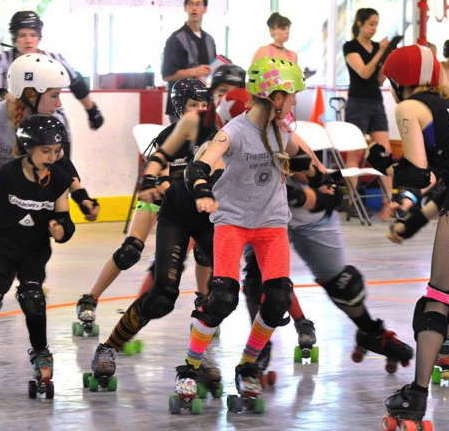
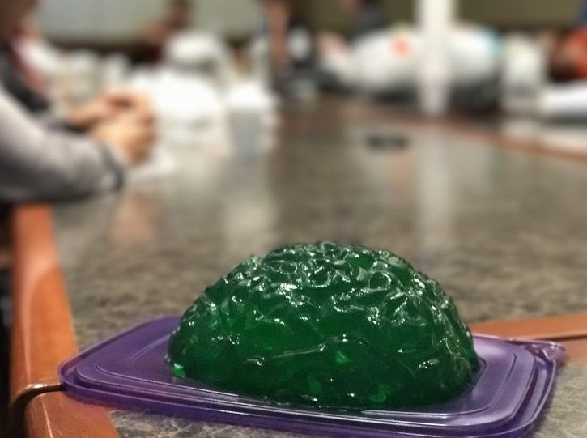
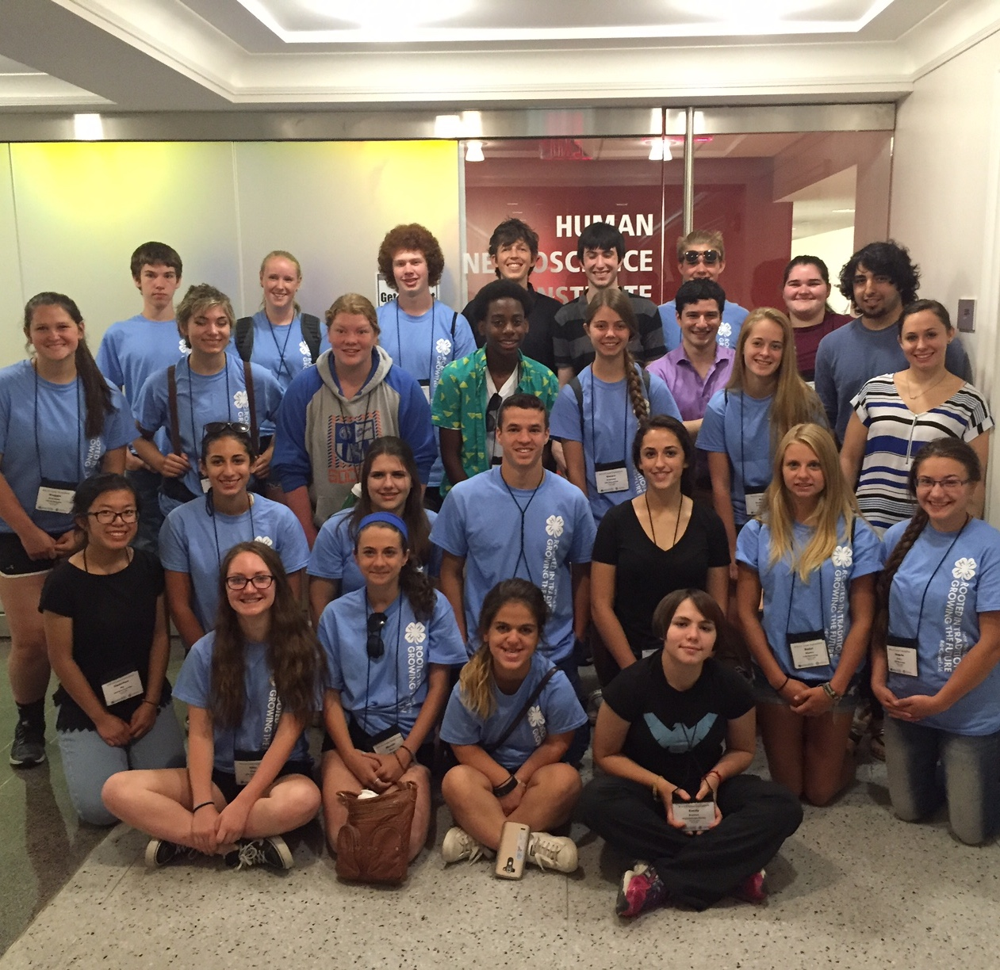

As an academic whose work aims to better educate the public about various public health issues, it is important for me to help communicate this research to others, in addition to my academic pursuits. Given my current focus on sports-related concussions and traumatic brain injuries, I have talked to several athletic teams, such as the Ithaca League of Women's Rollers, about concussions: how to identify them, how serious they are, and how to best recover if you get one. Talks such as these can have a major impact on groups that are outside of formal athletics or which may not have dedicated athletic trainers or similar personnel.
During the summers of 2017 and 2018, local middle and high school students came to Cornell University to participate in an educational outreach program I designed. This program aimed to educate young students about concussions, neuroscience, and neuroanatomy in order to encourage interest in science while also sharing knowledge about concussions and protecting the well-being of one's brain.
In 2016, I, as part of the laboratory for Rational Decision Making, designed a 3-day STEM program called "Get the Gist" as part of Cornell's Career Explorations Conference in partnership with New York State 4-H. I led high school students through the program, educating them about neuroscience, college, neuropsychological research methods, and other important topics for college-bound students. In 2018, I was invited to alter this program for middle school students in the "University U" program of the same conference.